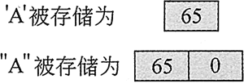
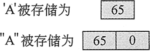

首页 > 编程笔记
C++ char数据类型（详解版）
前面我们介绍了数字数据类型，本节来看一看字符数据类型。
最简单的字符数据类型是 char 数据类型。该类型的变量只能容纳一个字符，而且在大多数系统上，只使用一个字节的内存。以下示例即声明了一个名为 letter 的 char 变量。请注意，这里的字符常数就是赋给变量的值，要用单引号括起来。
例如，数字 65 对应大写字母 A，66 对应大写字母 B，等等。下面的程序说明了字符之间的关系以及它们的存储方式：
图 1 字符在内存中是以数字形式保存的
现在，让我们先来认识一下字符串常数，并将它们与字符常数进行一些比较。
在以下示例中，'H' 是字符常数，"Hello" 是字符串常数。请注意，字符常数用单引号括起来，而字符串常数则用双引号。
不要将空终止符与字符 '0' 混淆。字符 '0' 的 ASCII 码是 48，而空终止符的 ASCII 码是 0。如果要在屏幕上打印字符 0，则显示的其实是 ASCII 码为 48 的字符；在使用字符串常数或给字符串变量赋值时，ASCII 代码为 0 的字符将自动附加在其末尾。
现在来看一个字符串常数存储在内存中的例子。图 2 描述了字符串 "Sebastian" 的存储方式。
图 2 字符串常数在内存中的存储方式
首先，可以发现字符串中的字符存储在连续的内存位置。其次，可以看到引号不与字符串一起存储，它们只是在源代码中标记字符串的开头和结尾。最后，请注意字符串的最后一个字节，它包含 null 终止符，由 \0 字符表示。最后一个字节意味着虽然字符串 "Sebastian" 的长度为 9 个字符，但它实际占用了 10 个字节的内存。
null 终止符是在后台默默奉献的又一个例子。在显示字符串时，它不会在屏幕上打印，但是它始终在那里默默地做它的工作。需要注意的是，C++ 会自动在字符串常数的末尾附加 null 终止符。
现在来比较一下字符和字符串的存储方式。假设程序中有常数 'A' 和 "A"。图 3 显示了其内部存储方式。
图 3 字符和字符串不同的存储方式
如图 3 所示，'A' 是一个 1 字节的元素，而 "A" 是一个 2 字节的元素。由于字符实际上被存储为 ASCII 码，所以图 4 显示了它们在内存中实际存储的内容。

图 4 字符和字符串实际存储的内容
因为 char 变量只能保存一个字符，所以它可以被赋值为字符 'A'，但不能被赋值为字符串 "A"：
现在应该已经了解，有些字符串虽然看起来像是只有一个字符，但实际上并不是。另外，也有一些字符看起来像是字符串，例如换行符
下面的程序显示了
最简单的字符数据类型是 char 数据类型。该类型的变量只能容纳一个字符，而且在大多数系统上，只使用一个字节的内存。以下示例即声明了一个名为 letter 的 char 变量。请注意，这里的字符常数就是赋给变量的值，要用单引号括起来。
char letter ='A';
下面的程序使用了一个 char 变量和若干字符常数：//This program uses a char variable and several character literals. #include <iostream> using namespace std; int main() { char letter; letter = 'A'; cout << letter << endl; letter = 'B'; cout << letter << endl; return 0; }程序输出结果:
A
B
例如，数字 65 对应大写字母 A，66 对应大写字母 B，等等。下面的程序说明了字符之间的关系以及它们的存储方式：
// This program demonstrates that characters are actually
// stored internally by their ASCII integer value.
#include <iostream>
using namespace std;
int main()
{
char letter;
letter = 65; // 65 is the ASCII code for the character A
cout << letter << endl;
letter = 66; // 66 is the ASCII code for the character B
cout << letter << endl;
return 0;
}
程序输出结果:
A
B
图 1 字符在内存中是以数字形式保存的
字符常数和字符串常数的区别
字符常数和 char 变量只能保存一个字符。如果要在常数或变量中存储多个字符，则需要使用更复杂的字符数据类型 string（字符串），字符串常数和变量可以包含一系列的字符。现在，让我们先来认识一下字符串常数，并将它们与字符常数进行一些比较。
在以下示例中，'H' 是字符常数，"Hello" 是字符串常数。请注意，字符常数用单引号括起来，而字符串常数则用双引号。
cout << 'H' << endl; //这显示的是字符常数
cout << "Hello" << endl; //这显示的是字符串常数
不要将空终止符与字符 '0' 混淆。字符 '0' 的 ASCII 码是 48，而空终止符的 ASCII 码是 0。如果要在屏幕上打印字符 0，则显示的其实是 ASCII 码为 48 的字符；在使用字符串常数或给字符串变量赋值时，ASCII 代码为 0 的字符将自动附加在其末尾。
现在来看一个字符串常数存储在内存中的例子。图 2 描述了字符串 "Sebastian" 的存储方式。
图 2 字符串常数在内存中的存储方式
首先，可以发现字符串中的字符存储在连续的内存位置。其次，可以看到引号不与字符串一起存储，它们只是在源代码中标记字符串的开头和结尾。最后，请注意字符串的最后一个字节，它包含 null 终止符，由 \0 字符表示。最后一个字节意味着虽然字符串 "Sebastian" 的长度为 9 个字符，但它实际占用了 10 个字节的内存。
null 终止符是在后台默默奉献的又一个例子。在显示字符串时，它不会在屏幕上打印，但是它始终在那里默默地做它的工作。需要注意的是，C++ 会自动在字符串常数的末尾附加 null 终止符。
现在来比较一下字符和字符串的存储方式。假设程序中有常数 'A' 和 "A"。图 3 显示了其内部存储方式。
图 3 字符和字符串不同的存储方式
如图 3 所示，'A' 是一个 1 字节的元素，而 "A" 是一个 2 字节的元素。由于字符实际上被存储为 ASCII 码，所以图 4 显示了它们在内存中实际存储的内容。

图 4 字符和字符串实际存储的内容
因为 char 变量只能保存一个字符，所以它可以被赋值为字符 'A'，但不能被赋值为字符串 "A"：
char letterOne = 'A'; //该赋值语句正确
char letterTwo = "A"; //该赋值语句错误
现在应该已经了解，有些字符串虽然看起来像是只有一个字符，但实际上并不是。另外，也有一些字符看起来像是字符串，例如换行符
\n，虽然它由两个字符表示，一个反斜杠和一个控制字符 n，但是它在内部其实只表示一个字符。事实上，所有的转义序列在内部都只有 1 个字节。下面的程序显示了
\n 作为字符常数的用法，用单引号括起来：
//This program uses character literals.
#include <iostream>
using namespace std;
int main()
{
char letter;
letter = 'A';
cout << letter << '\n';
letter = 'B';
cout << letter << '\n';
return 0;
}
程序输出结果：
A
B
关注公众号「站长严长生」，在手机上阅读所有教程，随时随地都能学习。内含一款搜索神器，免费下载全网书籍和视频。

微信扫码关注公众号